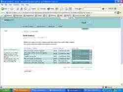

10/06/04 McDonalds want ME back
Well apparently they do. I've handed in my resignation (as I said last blog), and I've heard from valuable sources that they would like me to work through the summer every (or every other) Saturday. I might actually take them up on the offer, because it might make transferring to Swansea easier in September. It was also nice to hear from other mangers that they were sorry to hear that I was leaving and want me to stay.
I went into school this morning after having a phone call from Miss Howels (sp?) wanting money for the photographs. Well, I gotta say that this is the first piece of content I've actually bought for the site. Expect to see them on Shepherdnick soon! Well, I had planned to go in, pay the money and come back home to revise all day so that I could go out this evening, but instead I spent the morning with Jon, Jay and Tom up at Bread Of Heaven - no other burger is better than a "Big G". What a name.
"If you haven't got indigestion after eating a burger - you haven't eaten it right"
I was supposed to be going to a hardcore metal gig last night with a friend from work, but he rang me during the day to say that the gig was cancelled. Apparently, the drummer came on stage at a gig in Germany the night before, and said "We're not playing, f**k off!" and walked back off stage. It is rude but I thought it was quite funny at the same time.
IN OTHER NEWS: There isn't much of it mind you - hence the reason there is no photo to go with this blog - Tobeon told me today that he's planning on changing his web site again!
Anybody seeing the picture of my dad and me from the wedding, might find this picture slightly amusing, from the l337 photoshopping 5|<!llz of Tobeon.
Random Link: http://www.mcdepk.com
+^-^+ by <SN> @ 18:17
06/06/04 D-Day
Just a small reminder that today, 60 years ago, a battle was fought in Northern France, which signified the beginning of the end of the second world war. I've been watching some of the programmes being broadcast on TV recently to celebrate the day and some of the stories that have been told show the bravery and hardships that men had to go through in those times. I suppose I feel greatful that today's politically correct world means I won't have to be sent out to war.
Well, the wedding I went to was great yesterday. I didn't wear the suit that I posted a picture of in the last blog. Instead I went to Cardiff the next day with my mum and my sister and bought another one, completely black and exactly what I wanted. I was really happy with it. I'll see if I can post a pic of it soon. Anywho, the wedding was great fun (even if I did feel a bit like a gatecrasher). The down side was that there wasn't a three course meal - just a buffet, and that we had to entertain ourselves for about 3 hours between the ceremony and the reception. There was a band that played and they were awesome. They were a tribute band by the name of "The Upbeat Beatles"... they have a web site here.
I was talking the other day to Muggy, and he gave me the other half of this photo:
Click the pic to get a larger version
Yeah, OK, I did use a bit of photoshopping to make it look like it does, but it was pretty cool. I took a pic of him taking a pic of me... heh.
Tuesday I bought a 256 MB SD card for my digital camera, and it arrived Saturday morning (just in time for the wedding!). I don't know why I didn't buy one earlier. It was about £40, but means that I can take up to 800 photos in one go. Like as if I'll ever fill that many! Now all I need is more battery power. The Kodak EasyShare Dock 6000 is apparently well over-priced and I'm probably better off buying and charging lots of higher power providing rechargable batteries.
Today I finally got around to finalising the Bude Trip. Tom and I decided to get the show on the road, and he rang them once he knew how many tents to take I followed up his phone call to book the trip. We had to pay an extra £7 so that we could have 3 plots next to one another. This trip is gonna be loads of fun. I can't wait.
IN OTHER NEWS: I handed in my resignation to McDonalds on Friday. I didn't think I'd say it but I am going to be quite sad to go. You kinda get attached to the place after working there 3 times a week regularly. i'm lovin' shepherdnick though.
Yeah... well... probably shouldn't be doing that... moving on...
After Jon had seen the pic I posted of me in the suit, the body language I had seemed to remind him of someone. Someone quite close to every PC Gamer's heart. Those hardcore of you will know straight away, but for all of you who don't know who I mean, this should give you a clue ;)
Well, that's it for now kind gentle folk. See you next time, same Shepherdnick time, same Shepherdnick channel.
+^-^+ by <SN> @ 17:54
31/05/04 Bank Holiday Weather
Great isn't it? No! Just as I was about to walk to work, it decided to pour down with rain. I don't get it. For the best part of May the weather has been awesome. As soon as the long weekend comes, down comes the rain. It made it really humid in McD's tonight however, and it was quite unpleasant to work in. I was on fries for 2 hours to add to the heat. Grrr.
Not much has happened to me in the past 2 days. Apart from lots of people who I didn't know were computer literate have come to me and said they like my web site. This is great feedback for me, and thank you for all the comments! It's nice to know all my work doesn't go un-noticed.
Yesterday saw the birthday of my oldest friend, and we all went to the Open Hearth to celebrate it. So without changing tradition:
HAPPY 18th BIRTHDAY JON!!
His girlfriend (Kat) who is a fellow web designer (of the HTML variety) generously bought him his own domain, and made him a web site to go along with it! You can take a look at her handywork here: www.theowly1.com. And from the same family, I know Will bought Emily (Jon's sister) a web domain for her birthday, and it's located here: www.ethy.co.uk.
My parents came back from shopping today bearing items of clothing that cost a lot of money for me. I'm going to a wedding on Saturday and needed a suit, so they went out and bought one! I was a bit miffed, because I really wanted to see it before it's bought, seen as I'll have to wear it for 4 years or more through Uni, but they wanted to get it when they saw it. Apparently I have a weird trouser size, 30" waist and 29" leg. Doesn't seem weird to me. Probably because I'm not fat :P. Anywho, here's a pic:
Jon recons I look like the G-Man from Half Life :D
IN OTHER NEWS: A thread was started on the forum the other day about Jason Jones' web site and the locations of it. I found it. For those of you that knew him, I suggest you go there and give him the support he needs to make his site a wonderful success. You can get there from here: www.welshjay.tk. After searching around on there for a bit I came across the web site of a local band (many of the members I know from West Mon) Relapse, and I thought their site looks very professional. You can look at it from here: www.relapseband.cjb.com.
Right then, I'm off to bed, after I go and get naked and wet. By which I mean shower. I smell of McDonalds. I'm gonna shut up now.
+^-^+ by <SN> @ 23:38
29/05/04 The End of Friends
And by that I don't mean that I have no friends any more :P... I mean it was the last ever episode of "Friends" on channel 4 yesterday, which in my opinion wasn't too bad an ending. Compared to the likes of the ending of Buffy the Vampire Slayer, it was good. There weren't that many jokes in it, but it didn't need jokes, all it needed to do was tie up all of the story lines. I thought about different ways they could have ended everyone's story, and I also had the theory that they would make you think up your own ending, which in a way they kinda did.
But I didn't write that title for nothing. Wednesday in school saw the end of another era in lots of peoples lives. St. Albans Year 13 group has officially left the school and free to go off into their own lives. Many people are going to Uni, and others have decided to go to find a job, and others have decided to take a year out before they decide to get on with their lives. To everyone leaving St. Albans this year, I wish you the best of luck for the future and hope you achieve everything from life that you want. Thanks to everyone who signed my book as well! I had some great messages!
Even though it was an emotional day, we still managed to get a good set of photos, which are available here: End of St. Albans. Once I have recieved the Group photo and the Friendship photo that I had done, I will scan them and put them online for you all to download, much like the end of West Mon.
IN OTHER NEWS: Well, you may have noticed a lack of updates recently this week, and for that I'm sorry, but I really didn't think I'd be going out this much this week. Saturday night most of my mates stayed in or were working, but my house was empty. My sister had asked for her friends to come over, and being highly attracted to alcohol as I am, I thought this was the perfect opportunity to have a little tibble of the whiskey calling my name from under the stairs. Half a litre of Bell's whiskey later, and I ended up looking a bit like this:

Click the pic for more detailed photos of the leavers
day!
I remember running around barefoot on my front lawn, and in the morning I was able to see the damage I had done to them. They were completely cut open! But I managed to save my drink after falling over (apparently).
Monday night I went to the cinema with Plum to see Troy, and I was made to eat my words. I had thought that Troy was going to be one of those Hollywood blockbusters, where the only epic thing about them is the computer that generated all the images. But I was surprised to see that the story was very cool, and the computer graphics were used quite subtley, and didn't interfere too much with the story. The only drawback = it's 3 hours long and does go on a bit.
Wednesday night I did something I haven't done for ages - I went over Jon's house for a gaming session which ended up more like playing badminton all evening by the time we had set up the XBox LAN. Thursday evening I went with Ben, Plum, Hannah and Leanne to see 'The Day After Tomorrow'. I know Ben thought it was a pile of shat, but I thought it was quite good. If you can ignore the cheesy storyline underneath the real scientific aspects of the film, then it is amazing. It was incredibly topical to my geography lessons where we have to study theories of Global Warming. The film takes one of these theories and makes them a reality, and shows just how strong nature can be.
Right then. This is the last blog I will write whilst in St. Albans. For all of the people that visit from the school, remember you can always use Shepherdnick to contact one another... wherever your life might take you. If ever you get confused, or lonely you know you can always rely on the forum, or failing that, just send me an E-Mail! I'm always here to talk!
Keep it real!
+^-^+ by <SN> @ 14:18
20/05/04 Just Blogs
Well that's all it will be from now 'til the exams are over. That is if I can squeeze enough time to put the group and Year photos that have been planned for next Wednesday. I can't believe that the end of another school period is coming to an end. It has been a great two years, with both its ups and downs, new friendships that I've made and new things that I've learned! I'm gonna miss it.
Well this is the third day in the last three that McDonalds have called me asking me to work in the evening for a couple of hours. To which I've said "no" to each. With the weekend they've shifted me to work I don't think so... Friday night close (until 1AM), Saturday 12-7, Sunday 4-12AM. So yeah, a lot of free time I've got this weekend. Not. God I want to beat Ronald McDonald up so bad... him and his happy face... makes me sick...
Sorry, where was I? Ahh yes... Last Friday I was asked to go to the Pub or as it's know: Le Pub. Yes, that IS a link, but my damn ISP is not letting me view certain web sites because of Error 502's or DNS errors. Damn Wanadoo. More like Wanadon't. I Wanafreeserve back. Anyway, I was asked to go there for Steph's 18th. It would be wrong of me not to do this:
HAPPY 18th BIRTHDAY STEPH!!
I had fun, but had to leave early unfortunately. Ben and Plum had run out of money and were too drunk to argue with so I got on the train and went home with them. I must have spent about 2 and 1/4 hours in the pub in total. As most of you know by now, that's not enough time to get me drunk.
Despite me saying I don't have anything other than a blog to upload, I thought these pictures might while away a couple of hours. For those of you can't be bothered to click the link, this photo might give you a second of amusement:
Aww, click the pic to see more amusing pics of Dando!
IN OTHER NEWS: People with bad eyesight will be pleased to see that the text has increased in size. It now has a standard size of 8 Points throughout the site. If you want to have your vote on the size of text, be sure to check out the poll which has been updated today!
I spent about an hour updating the Bread Of Heaven comic site on Tuesday so that it now has a splash page, and now should fit all on one page (on 1024 * 768 resolution)... I still have to change it for lower resolutions.
Speak soon!
+^-^+ by <SN> @ 18:09
13/05/04 Everybody's Changing
Well then. Been a busy couple of days so it has. Hence the lack of updates! And for that I am sorry. But here I am again, ready to give you what you want. Some Shepherdnick Love. That's right... you're all addicted. I know! I've seen the forum! Heh.
First off, I'd like to make a big thank you to "our reporter who's not in a field", the0wly1 for making the forum the hottest place on the net for E3 information. For all of you not knowing what E3 is, it stands for the "Electronic and Entertainments Expo" and is held annually in Los Angeles at around about this time of the year. It's what every hardcore gamer looks forward to in the year, and this year is no exception. I've hardly had time to check many news web sites, but so far, I've heard news about Halo 2, Half Life 2, Doom 3, Fable, the New Zelda Game, Metroid Prime 2: Echoes, Nintendos new hardware: DS, Sony's new hardware: PSP, Metal Gear Solid 3, Metal Gear: Acid, GTA: San Andreas, and Kill Zone. Thank the lord we are finally finding out about these games that were featured at last year's E3. I remember when the release dates for HL-2 and Doom3 were last year!
Here's a list of some useful gaming news web sites:
Hopefully I will be able to collaberate all of the important material into a site or something for all of you that don't have access to the forum. If you don't there's no reason why you shouldn't! Go On! Get yourself over to the forum's now!!
This is the first night in three that I've had off of work in McD's. I was quite annoyed at them. I made a special effort to go there outside of my shift to book time off work, well before the shifts were going to be planned. What happens? They give me a shift on the night that I asked off. Damn those baboons. It's not hard though, I want next Friday off, please don't give me a shift. Ok, I'll give you one. No, I don't want one. Yes I know that's why I'm giving you one. Gyahhhhh!!!
Ahh well, I won't sadly be there too long, if I get the job with my dad in the summer. Laboratory work for me! I'm good at that see, I have to use my brain. Don't really need much of a brain for Mc's. Which reminds me that I need to book off a week for that when I go to Cornwall which is now being planned on the forum for about the 11th to the 18th of August.
Well, it appears I'm better at writing essays than answering very very small questions. I had marks back for work that I've done in Biology and Chemistry. Last wednesday I managed to write a 4 sided essay in 40 minutes (a mean task) to be handed in the following lesson. I thought it was going to be a crock 'o sh!te but apparently it was worth 23/25. W007 me! I also had my mark back for my Chemistry coursework and I was quite chuffed with that: 35/45. He told me it was worth an A. I would have liked more marks because they will add up, but on the other hand I need 2 D's to get into Uni, so Boo Ya!
*BRB, gonna make a cuppa tea*
*Back*
IN OTHER NEWS: Sunday evening I recieved a letter given to my by my mother. I love the way she gives me letters late, even though this one in particular had "URGENT: THIS REQUIRES IMMEDIATE ACTION" on the envelope. I had forgotten to get back to UCAS about my University application, and needed to respond by 13th May. Eeep. I used the online UCAS submission form, and was pleased to confirm the Uni I will be going to. Wow. It was quite scary, and an important point in my life, so I thought I'd show you:

Click the pic to get a larger version!
Don't get too excited now, but the HaRdCoRe Shepherdnick-ers have got another download available over on the sub section. I hope this screenshot can explain a bit of it!
And Finally! [Wow this is a long blog!] It was my sister's prom today, and I wouldn't usually post about her without her knowing about it, but I had to post a few pics. She spent a lot of money on the day, and I think it payed off. She looked really really pretty. Take a look at a few of the photo's here: photos019.html
See you on the flip side!
+^-^+ by <SN> @ 21:57
04/05/04 Back to the GrindStone
Now that the coursework is all out of the way, here comes the revision. This is gonna be painful ain't it? Talking of coursework, I spent ages rushing to get it done by the end of Friday when I thought he wanted them in, but after handing it in he said that's all he was taking in this week. He's not actually sending them off for another two weeks. And I found out today that he hadn't even managed to look at mine! Fine. Last time I rush for him! Well it will probably be the last time I ever do work for him. Well done to Tom though. Don't know if I can live up to your 41/45.
Thanks to Neil for inviting me to his Birthday Party... 'twas enjoyable retro. What with the 'Classic Pop' and the location. Great Stuff. I behaved myself that night too. That and the bar maid was the first person to ever ID me at a bar. It's all downhill from here...
Seen as I didn't go out for Dan's Birthday on Sunday I went instead to the pub (because of the beer fest). The less said about 'Robinsons Old Tom' the better. I think Old Tom might have used some home grown juices to make it. The head was yellow for crying out loud! I poured mine into the canal after managing to sup a half of it. The Exmoor Fox was nice though. When we got to the pub there were about 10 different ales on the board, but they had ran out of beer by the time we left at about 10 'oclock!
Yesterday was spent in work from 2PM to 10PM. I ask you what kind of a shift is that? I must have really p!ssed off my manager for her to give me a horrible shift like that. I couldn't do anything in the day (not enough time) and I couldn't go out in the evening (it was too late). I did however manage to squeeze in a pint or two afterwards. Everyone had planned to go to the pub in the evening, so I just met up with them.
Random Image:
Click image to get a larger version
Something to note about the image: I changed the brightness and contrast on it, so that it can be used as a DTB. I thought it was pretty funky as all the leaves seem to be the same colour, regardless of the fact they leaves are on different trees.
Speak Soon!
+^-^+ by <SN> @ 16:23
01/05/04 Neil's Birthday
Last night is starting to catch up with me now. Tiredness creeps up on you after a night out. Surprisingly I woke up early after getting in at 2 AM yesterday morning. Jack is the answer. Great time last night Steve, I hope you're planning the next one. I met Dando and Kyle in the pub last night and spent loads of time talking to them. Keane must have been played about 3 times. Also spent a lot of the evening talking to Robyn and Tracey who I used to work with at the Grange. It was good to catch up.
Before I mention any more, first I have to say:
HAPPY 18th BIRTHDAY NEIL!!
Who's party I'm going to tonight.
Here's an image:
Click the pic to get a larger version
You might be able to understand its origin from the forum topics. I said my piece on them earlier. Check out the link to see what I'm on about.
IN OTHER NEWS: Those
most observant of you will have noticed the new Shepherdnick feature that
I incorporated today:  . I don't know where I am going with this, but hopefully I will update
it every 2 weeks. You can find it at the bottom
of the page.
. I don't know where I am going with this, but hopefully I will update
it every 2 weeks. You can find it at the bottom
of the page.
For all you chemists, check out this site (but keep it hushed, I'm not supposed to put it on here). The videos don't work because each of them are about 98 MB. Do you know how long that would take me to upload? About 630 Hours.
+^-^+ by <SN> @ 19:23
30/04/04 I'm still alive
Just in case you lot were wondering where the hell the updates were going! Well just to say that I'm still here alive and kicking, just that I've had absolutely tonnes of work to do this week and I've been glad of the break from McDonalds. They gave me one shift this week. And that was on a Monday! So that means I've got the entire Bank Holiday weekend to do whatever the hell I want. And most of that will involve alcohol no less.
Thursday (yesterday) I went to the social (or UUS as it was known as - the Underground Unnoficial Social) at the Bassment. I had a great time, even if certain efforts were just not good enough. Thanks to Paul Heany as well for organising the whole event, I think it was a great success! Now to review the Bassment (no that I'm going to make a habit of reviewing clubs). I thought it sucked. They had carpets, which basically meant previous nights out there are preserved in all their foul stench for all to smell as soon as they walk into the place. That and the fact they had no beer on tap. It was crappy Carling (which I thought tasted off anyways). I ended up drinking Worthingtons out of a can all night. Pah! Music was all right though, you can tell where it gets its name the BASSment.
Tonight (in 30 mins actually) I will be going out drinking again to Le Pub with Steve from work. Steve has recently joined the forums for those of you regularly visiting it. Apparently he's got a friend called "Jack" who can sort out hangovers. I've met him once or twice before ;).
Tomorrow evening I'm going to Neil's 18th party in Pontyfelin Institute for Leisure Culture and Sport. Or P.I.L.C.S. for those of you not knowing it for the other name. Sunday I should be going out with Dan Gray for his 18th Birthday, and I'm looking forward to it. Not been out with Dan for ages! Monday I'm hoping to visit the Open Hearth to partake in sampling small delights of the ale variety. Yes, that's right, they've got a Beer Weekend going on. Over 25 different Ales on sale. Mmmm....
I will be enjoying this weekend lots. I've handed in two pieces of Coursework today for ICT and Chemistry, and I have to say I've worked my ass off for them both. No work for me this weekend then, Lol.
IN OTHER NEWS: Walking home from school today, Will made me reminisce of happier music times of the Bloodhound Gang. Awesome.
We also need to make a big Internet welcome (what's one of them???) to Neddy_Noir, or his alter ego: Ben!! Hey Ben, cool you got the 'net now... you're gonna love it.
Keep it real homies ^^
+^-^+ by <SN> @ 18:40